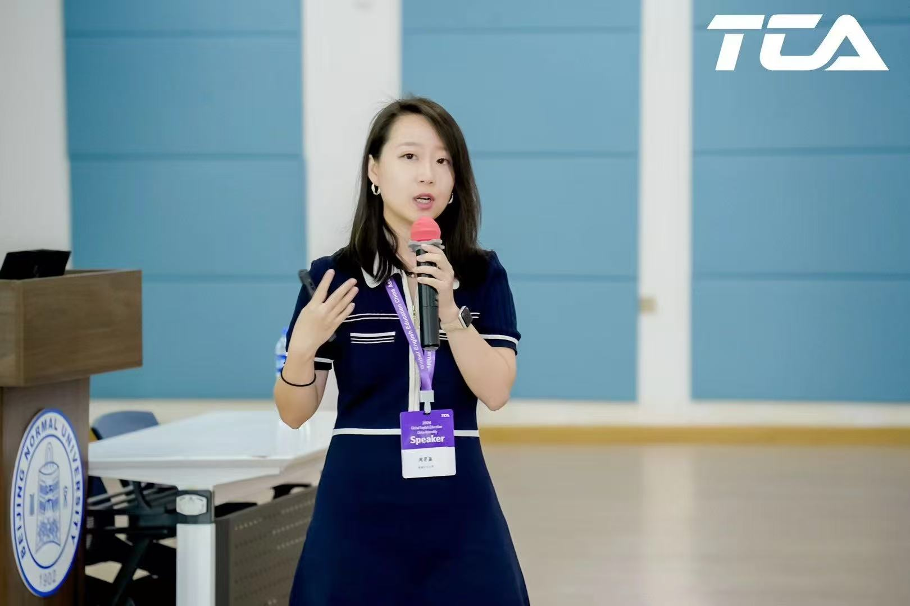
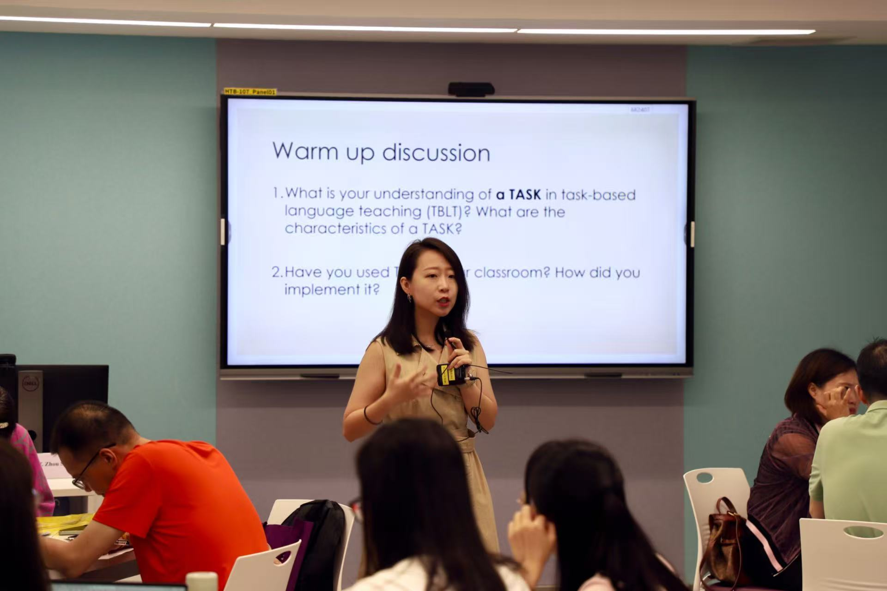
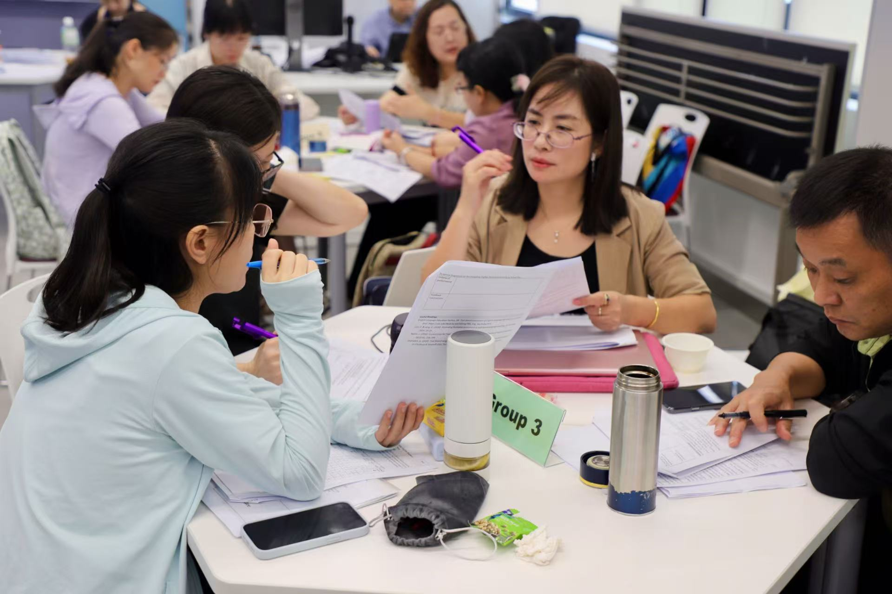
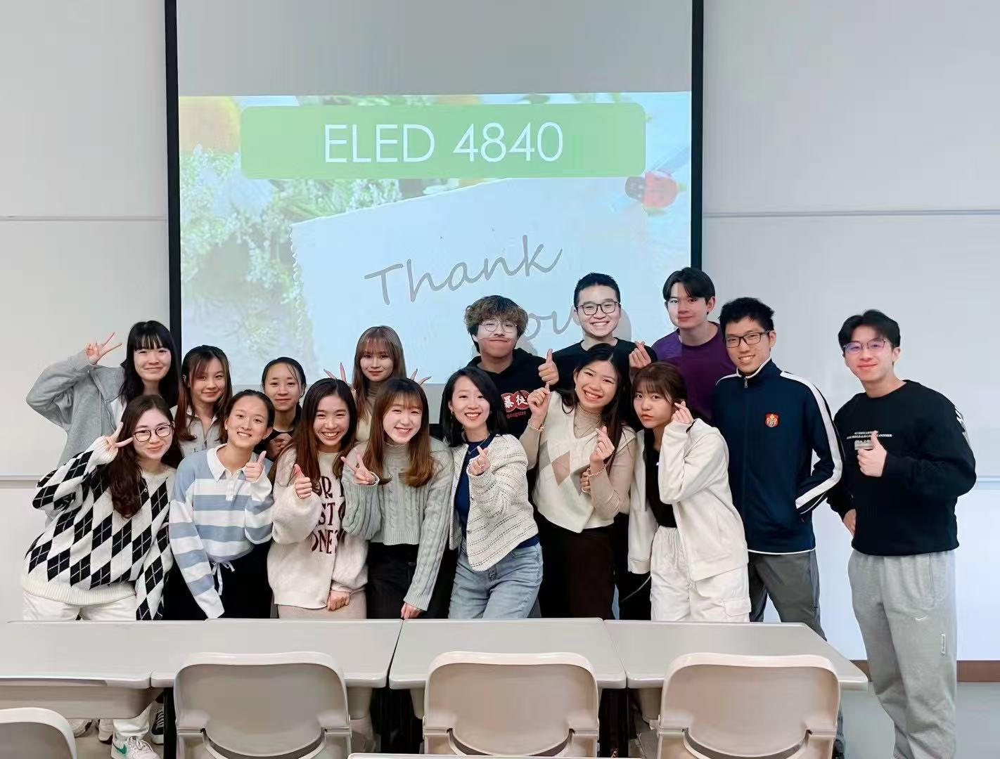

Teaching
Courses Teaching
The English Language Curriculum
Language Testing and Assessment
Language Assessment and Evaluation
English for Education Students
English Communication for University Studies
Teaching in practice
Photo Gallery





Teaching community
Guest Lecturers Hosted in Taught Courses
GenAI for language assessment
Dr. David Woo ELED 4840 February 2026
Integrating teacher, peer, and AI feedback in the writing classroom
Dr. Kai Guo TESL 6503 March 2026
Assessment for content and language integrated learning
Dr. Daniel Fung TESL 6503 April 2026
Assessment as learning & the use of AI for language assessment
Dr. Bruce Li & Ms. Iris Li ELED 4840 February 2025
Assessment as learning & the use of AI for language assessment
Dr. Bruce Li & Ms. Iris Li TESL 6503 March 2025
The ‘hidden’ curriculum in material design
Prof. Heath Rose PEDU 6111 November 2024
Introducing innovations into ELT curriculum in Hong Kong schools
Ms. Cindy Yin Mei Leung & Ms. Holly Ho PEDU 6111 December 2024
Supervision
Interested doctoral applicants are advised to email both their CV and proposal related to Sihan’s research areas and focuses. sihanzhou@cuhk.edu.hk